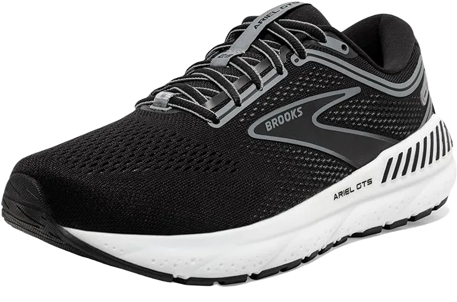

6 Best Work Shoes for Back Pain in 2024
Dealing with back pain can be quite challenging, making movement difficult. It's been noted that a significant portion of workplace absenteeism is attributed to back pain among employees. To navigate your day comfortably, it's essential to invest in a pair of work shoes designed for those suffering from back pain. Before we delve into the best options, let’s first understand what back pain shoes are and their primary causes, which can help you manage this persistent issue effectively.
Research from Australia indicates that work shoes for individuals with back pain can play a crucial role in overall health. Studies show that people experiencing back pain have a 14 to 15 percent higher risk of dying from various causes. Additionally, discomfort in the back and spine can lead to numerous other health issues. When choosing the best work shoes for back pain, it’s important to consider those that provide support for both lower and upper back pain.
-
#1
Men’s Brooks Addiction Walker
.webp)
The Men's Brooks Addiction Walker is our top pick, primarily due to its remarkable features. Brooks has established itself as a leader in footwear designed to tackle various foot problems, and this pair exemplifies that dedication to comfort. With a 100% comfortable fit, these shoes are ideal for both walking and running.
These shoes boast an attractive design and offer two closure options: a traditional lace-up style and a practical slip-on design. Available in timeless Black and White, they are versatile enough to match any outfit, making them a great addition to your wardrobe.
Made from a combination of full-grain leather and brown suede, these shoes prioritize durability while maintaining a stylish appearance. They incorporate several advanced technologies to provide optimal support. The Extended Progressive Diagonal Roll Bar (PDRB) minimizes stress and reduces the risk of injuries to the back, knees, ankles, and hips. Hydro Flow Technology, which features chambers filled with silicone oil, distributes pressure effectively when the back of the foot hits the ground. -
#2
Men’s Asics Gel Kayano 24
.webp)
Asics is a renowned shoe brand, and the Asics Gel Kayano 24 is among the best options for those suffering from back pain. This shoe not only offers support for the back but also provides excellent knee support for runners, making it a well-rounded choice for active individuals.
The Gel Kayano 24 features a striking design in vibrant blue and orange, ensuring you look stylish while wearing them. The upper layer is crafted from mesh material, which promotes breathability, keeping your feet fresh and odor-free. This upper construction secures the foot in place while allowing for natural movement in various directions. Additionally, the lightweight midsole is designed with multiple layers of cushioning, delivering maximum stability and support. With these shoes, you can expect noticeable relief from back pain.
The Gel Kayano 24 incorporates several advanced technologies to enhance performance and comfort. The Meta Clutch external heel counter provides excellent support, creating a locked-in fit around the heel. The Impact Guidance System (I.G.S) promotes a natural gait from heel strike to toe-off, while the Guidance Trusstic System ensures structural integrity in the midfoot, improving overall gait. The Guidance Line Technology features a vertical flex groove that enhances movement efficiency. -
#3
Women’s Brooks Glycerin 15
.webp)
Next on our list is the Women’s Brooks Glycerin 15, an exceptional choice for those prioritizing comfort and stability. This shoe is particularly known for providing maximum arch support and superior cushioning, effectively absorbing impacts to protect your feet.
The shoe features an attractive design with multiple 3D overlays while remaining lightweight, making it easy to walk and run—even if you are experiencing back pain. Its midsole is crafted from DNA material, delivering excellent cushioning for enhanced comfort. To further assist with pain relief, the shoe includes a smooth transition zone, facilitating a seamless running experience. The outsole is designed for optimal grip on the ground, allowing for natural movement in various directions, making it an ideal option for women dealing with lower back pain.
The Women’s Brooks Glycerin 15 incorporates innovative technology to enhance performance. The 3D Fit Print is a set of upper overlays that provide extra support without compromising the shoe's lightweight and flexible nature. -
#4
Women’s New Balance 1340v2
.webp)
Another standout option on our list is a remarkably comfortable shoe specifically designed for women. This pair excels in providing optimal movement and comfort, making it an excellent choice for active women.
The shoe boasts an appealing design, combining style with functionality. The upper material is crafted from rubber mesh, enhancing comfort while allowing for breathability. Ideal for dental assistants, this shoe offers maximum cushioning for the feet. Its midsole consists of a blend of Acteva Lite, N2, and Abzorb foams, ensuring superior comfort and shock absorption. This construction not only protects against shocks but also safeguards the ankles and knees, helping to prevent disturbances in the back. Additionally, the midsole features a T-Beam and TPU shank, contributing to its lightweight nature and providing essential arch support.
This shoe incorporates several advanced technologies for improved performance. The Abzorb cushioning technology in the forefoot facilitates a smoother heel-to-toe transition, while the Transfuse material in the midsole enhances overall cushioning. The Ndurance technology in the outsole ensures maximum grip on various surfaces, and the N2 cushioning boosts the shoe’s durability. -
#5
Women’s Brooks Ariel 16
If you're looking for other comfortable shoe options for women experiencing back pain, consider this elegant choice that prioritizes both style and comfort.
This visually appealing shoe is crafted from breathable mesh material, ensuring maximum airflow. Inside, it features multiple layers designed to provide a cushioning effect for your feet. This construction promotes stability and support, particularly for the arch, making it an excellent choice for those seeking relief from back pain.
The shoe includes several advanced technologies to enhance performance. The BioMoGo DNA midsole cushioning allows women with back pain to run longer distances comfortably. The Progressive Diagonal Roll Bar offers excellent control, enabling a smoother walking or running experience. Additionally, the removable Ultimate Sock liner provides extra cushioning from within the shoe. -
#6
Men’s Adidas Ultra boost
.webp)
Adidas is a remarkable brand when it comes to footwear, especially for those suffering from back pain. Their shoes are incredibly lightweight, secure, and well-cushioned, offering exceptional stability and comfort for everyday wear.
The design of these shoes is both practical and appealing, making them perfect for a stroll in the park. The upper part is crafted from stretchable knitting material, allowing for flexibility and ease of movement while running. Additionally, a heel cage at the rear foot provides added security. Lined with breathable mesh material, these shoes are easy to clean and maintain. The moisture-wicking insole enhances comfort by managing moisture, while the midsole is made from Ultra Boost compound, featuring energy capsules that ensure a comfortable walking experience.
Adidas shoes are equipped with several innovative technologies that enhance performance. The Ultra Boost cushioning technology provides exceptional energy return with every step, making it one of the best cushioning systems available. The Continental rubber outsole offers reliable grip on various surfaces, whether wet or dry.